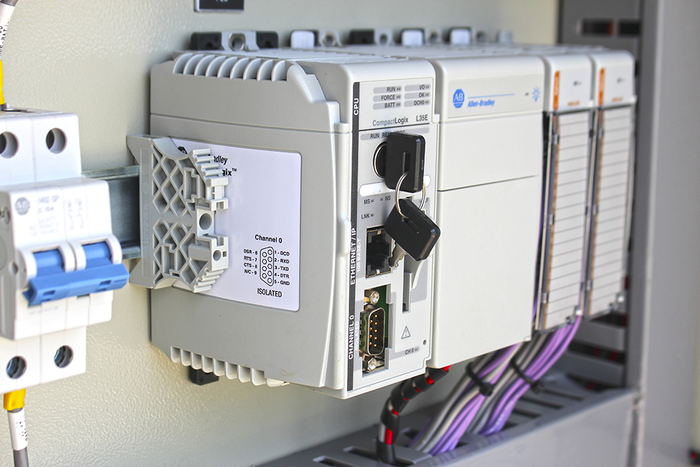

Suministros
Experiencia:
MONTAJE, CALIBRACIÓN Y CONFIGURACIÓN DE INSTRUMENTOS Y PLC
- Cajas Hoffman para Radios de pozos de bombeo progresivo (PCP). Campo LA CIRA-INFANTAS (OXY)
- Suministro medidor multifásico Marca: KAM para la LCI05. Campo LA CIRA-INFANTAS (OXY).
- Suministro de Kit sistema de presurización tablero torres de sorbedoras TTE 1001-1002 Planta Deshidratadora. Campo LA CIRA-INFANTAS (OXY).
- Suminitro de detectores de gas metano ampliación SCI autogeneración. Campo LA CIRA-INFANTAS (OXY).
- Suministro de tableros nema 4x para SCI de proyecto de hornos Planta deshidratadora. Campo LA CIRA-INFANTAS (OXY).
- Suministro de cajas Nema 7 para Estación 1. Campo LA CIRA-INFANTAS (OXY).
- Suministro de tableros de casetas de inyección. Campo LA CIRA-INFANTAS (OXY).

- 